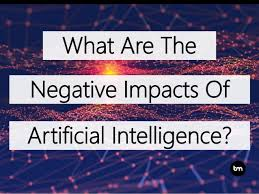

Artificial Intelligence (AI)
links
Negative Effects of Artificial Intelligence

RISE OF UNEMPLOYMENT
Of the various negative effects of artificial intelligence, the most commonly cited is an obvious rise in unemployment. According to the above-mentioned study by PwC, about 30% of jobs will be automated by 2030 and about 44% of workers – especially those with a low level of education – will be at risk of losing their jobs. Hence, people are justifiably afraid of being replaced by AI, as it can consistently perform the same tasks, with lower chances of error.
DEVELOPMENT OF AUTONOMOUS WEAPONS SYSTEM
Autonomous weapons systems are fast moving from the drawing board to actual battlefields, and are described as the 3rd revolution in warfare, after gunpowder and nuclear arms. This has naturally raised concerns and questions like what will happen if these weapons systems fall into the wrong hands? Could these weapons trigger a destructive AI war, much like nuclear warfare? According to a report by ICRAC, these fears are further exacerbated due to a lack of scientific evidence – specifically, there is a concern that robotic weapons will never have the ability to accurately identify targets, or make appropriate decisions regarding proportional use of force, thus causing high collateral damage.
AI DATA IN THE WRONG HANDS
Currently, there are 26.66 billion (according to Statista) connected IoT devices in the world – and this number is expected to rise to 75.44 billion by 2025! These gadgets – including smart TVs and fitness gadgets – continuously read and retain personal information, often without duly informing users. In the wrong hands, this data could be extremely revealing – even dangerous. Most tech giants, including manufacturers, do not provide information on where the data is being stored, or how it is being collected or protected. In essence, such risks necessitate a major change in how cybersecurity is approached not only in organizations but also in our personal lives.
AI CAN BE UNPREDICTABLE
A more immediate fear, than killer robots attempting to manipulate our timeline, is how AI would disrupt our geopolitical or other systems. These concerns stem from real life incidences – for example, the 2016 presidential elections in the US are said to have been greatly influenced by Facebook’s newsfeed algorithm – especially since 126 million Facebook users saw divisive content posted by the Internet Research Agency, a Russian backed group. Hence, despite its increasing adoption, the fact is that AI is still a developing field, and we can’t accurately predict its future outcomes.